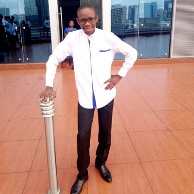

|  |
Rodgers OtomThe founder and CEO of Jodger solutions I am a biochemist by profession. I attended the University of Nairobi, School of Medicine and
earned a bachelors degree on the same.I love coding, and I have always wanted to learn how
to develop a website. |
| Dates | Work |
|---|---|
| FEB. 2019 - PRESENT | C4DLab | Assistant Data Analytics And Bikeshare Admin Duties as an intern
|
| NOV. 2017 - DEC 2018 | UON- CHIROMO SDA GROUP | Deputy Elder
|
| HTML | ⭐⭐⭐⭐⭐ | CSS | ⭐⭐⭐ | |
| JavaScript | ⭐⭐ | PHP | ⭐⭐ |